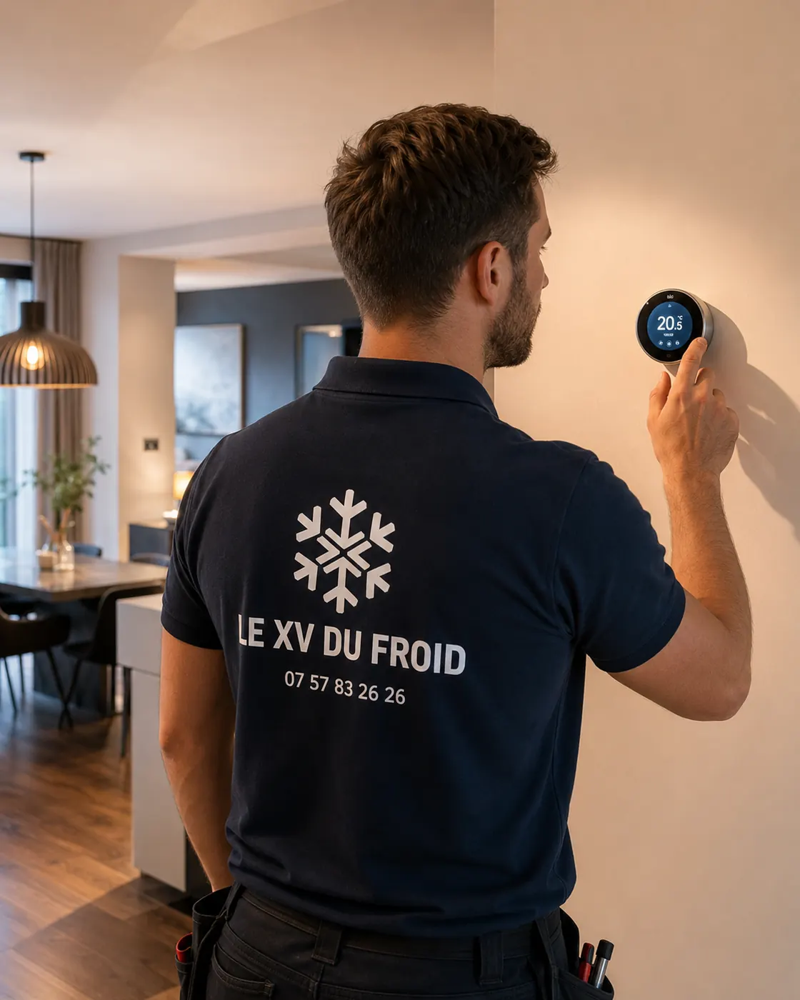

Urgence climatisation Poissy · 78300
Urgence climatisation à Poissy : le disjoncteur saute dès que la clim démarre
Vous appuyez sur la télécommande, l’unité ronronne une seconde, puis clac : le disjoncteur tombe. Ce n’est pas un caprice du tableau. Quelque chose consomme trop, ou fuit à la terre. Voici comment le cerner.
- Gestes sûrs avant la visite
- Cause mesurée, pas devinée
- Nous faisons au plus vite
Le symptôme
Un disjoncteur qui saute protège quelque chose.
Un disjoncteur coupe quand le courant dépasse ce que la ligne peut porter, ou quand un différentiel détecte une fuite vers la terre. Dans les deux cas, il fait son travail.
Remettez-le une fois. Si l’appareil fait sauter le disjoncteur dès qu’il démarre, ne recommencez pas : chaque essai chauffe les composants et peut aggraver la panne.
Notez ce qui se passe juste avant : le ventilateur démarre-t-il, entend-on un claquement, le groupe extérieur ronfle-t-il sans partir ? Ce détail oriente tout.
Les suspects
Pourquoi une clim fait sauter le disjoncteur
Du plus fréquent au plus rare.
- Condensateur fatigué : le moteur du compresseur ou du ventilateur tire trop pour démarrer.
- Compresseur qui force : bobinage abîmé ou mécanisme grippé, ce qui est plus lourd.
- Humidité ou infiltration : de l’eau dans une connexion ou une carte déclenche le différentiel.
- Ligne sous-dimensionnée : un disjoncteur trop petit ou un fil trop fin pour la puissance.
- Autre appareil sur la même ligne : chauffe-eau, plaque, quelque chose qui s’ajoute à la clim.
Au téléphone
Dépannage climatisation urgence Poissy : ce qu’on vous demande
Pour un dépannage climatisation urgence Poissy, on vous demande d’abord le type de disjoncteur qui saute : celui de la ligne clim, ou le différentiel général. Ce n’est pas la même panne.
On demande aussi si le problème est apparu après de la pluie, un orage, un déplacement de l’appareil ou une coupure de courant. Et si d’autres appareils de la maison sautent aussi, auquel cas l’électricien passe avant nous.
Pour la visite, nous faisons au plus vite. Appelez le matin : nous regardons ce que l’agenda permet dans la journée, sans vous promettre de délai.
À Poissy
Quartier pavillonnaire ou petit immeuble : deux cas différents
Dans un pavillon, la clim est souvent alimentée par une ligne dédiée, avec un disjoncteur propre. Le défaut est alors presque toujours dans l’appareil ou sa liaison.
Dans un petit immeuble, l’alimentation peut venir d’un compteur partagé ou d’un tableau de couloir. On vérifie d’abord que la ligne est bien celle de la clim avant de toucher à l’appareil.
Quand la ligne est en cause, on le constate par écrit et on vous dit qui appeler, électricien ou syndic.
Ne changez pas un disjoncteur pour un calibre plus gros. Cela protège le fil de moins, pas la panne de plus.

Ce que fait le technicien sur place
Appareil coupé, il vérifie l’isolement des bobinages, la capacité du condensateur et le serrage des bornes. Il relance ensuite avec une pince ampèremétrique pour lire le courant au démarrage.
Si le condensateur est faible, on le change souvent dans la foulée. Si le compresseur est en cause, on vous explique les options avant de commencer.
- Isolement des bobinages mesuré
- Condensateur contrôlé
- Courant de démarrage relevé
Questions
Disjoncteur qui saute sur une clim à Poissy : vos questions
Puis-je réarmer plusieurs fois le disjoncteur ?
Une fois, pas plus. À chaque essai, l’appareil chauffe un peu plus et le défaut peut s’aggraver.
Cela peut-il venir d’un orage ?
Oui, une surtension peut abîmer un condensateur ou une carte. L’appareil semble marcher puis le disjoncteur tombe.
Le différentiel saute seul, que cela veut dire ?
Un courant part à la terre. Cela peut venir d’une infiltration d’eau ou d’un bobinage abîmé.
Est-ce une urgence si la clim est seule en cause ?
Si la pièce est inutilisable à cause de la chaleur, oui, on le traite vite. Sinon, appelez dans la journée.
Quand venez-vous pour une urgence climatisation à Poissy ?
Nous faisons au plus vite. Appelez le matin pour un créneau rapide, sans délai garanti à l’avance.
La pièce se change-t-elle sur place ?
Souvent pour un condensateur ou un ventilateur. Pour un compresseur, une commande est souvent nécessaire.
Dans votre ville
Les autres services à Poissy
Un besoin différent, une page différente : dépannage, entretien, installation ou urgence.
Autour de chez vous
Urgence de climatisation dans les villes voisines
Si vous êtes à la limite de deux communes, lisez aussi la page d’à côté.
- Urgence climatisation Conflans-Sainte-Honorine : groupe extérieur qui penche ou se décroche
- Urgence climatisation Mantes-la-Jolie : la clim s’arrête et ne redémarre plus
- Urgence climatisation Sartrouville : fuite d’eau au plafond ou sur un meuble
- Urgence climatisation Houilles : cabinet médical, pharmacie, laboratoire en panne de froid
- Urgence climatisation Plaisir : bébé, personne âgée, chaleur et sécurité
- Urgence climatisation Chatou : locataire, propriétaire, assurance, qui appeler en premier
- Urgence climatisation Saint-Germain-en-Laye : odeur de brûlé, couper et ne pas rallumer
- Urgence climatisation Versailles : panne en pleine chaleur, les premiers gestes
À côté
D’autres besoins dans les communes voisines
Chaque ville a ses pages.
Nos services
Aller plus loin sur la climatisation
Les pages du site qui complètent celle-ci : services, guides pratiques et devis.
- Dépannage climatisation en Île-de-France
- Installation de climatisation : split, gainable, monobloc
- Entretien de climatisation et de clim réversible
- Demander un devis climatisation gratuit
- Toutes nos zones d’intervention
- Quelle puissance de climatisation choisir ?
- Ma climatisation ne refroidit plus : que faire ?
Où on intervient
Poissy et alentours
Le centre de Poissy, Beauregard et les quartiers proches de la gare, ainsi que Carrières-sous-Poissy, Villennes-sur-Seine, Achères et Orgeval.
Signaler une panneÀ lire aussi
Autour de Poissy
Pages voisines : dépannage climatisation Poissy, dépannage climatisation Les Mureaux, climatisation Conflans-Sainte-Honorine.
Transparence
Un devis clair avant toute intervention.
Vous savez ce qui est prévu, pourquoi c’est nécessaire et à quel tarif avant que le technicien commence. Puis contrôles et essais avant son départ.